Senior AI Solutions Architect & Production Full-Stack Builder.
Ph.D. Candidate (ABD) with 7+ years of institutional R&D. Specializing in hyperscale AI infrastructure dispatch, in-silico chemical informatics, event-driven deterministic state machines, and statutory multi-agent compliance systems.
Core Engineering Competencies
Hyperscale AI Control
100Hz telemetry queues, MILP power-capping optimization, and closed-loop BACnet/NVML actuator orchestration for H100/B200 clusters.
In-Silico Cheminformatics
RDKit ECFP6 topological encoding, 8ms single-pass ADMET/hERG inference on single CPU nodes, and closed-loop bioisosteric mutation.
Multi-Agent State Machines
Deterministic LangGraph cyclic workflows, automated statutory vector retrieval, and zero-hallucination compliance dispatch consoles.
Safety & Security by Design
KR registered patent test generation, STPA safety-critical hazard analysis gates, and SonarQube automated CI/CD quality pipelines.
Verified Intellectual Property & Research
Big Data Art Convergence Recommendation System & Automated STPA-based SW Safety Test Generation.
Peer-reviewed papers on Classical Music Emotion Recognition & Recommendation System Survey.
Spearheaded national projects across Smart Mobility, Deepfake Forensics, and Radiation Simulation Software.
Peer-Reviewed Publications & Research Papers
Verified academic articles published in SCIE journals and international engineering conferences.
A Survey of Recommendation Systems: Recommendation Models, Techniques, and Application Fields
Comprehensive taxonomy and survey analyzing collaborative filtering, content-based algorithms, knowledge graphs, and hybrid deep learning architectures applied across modern industrial domains.
Classical Music Specific Mood Automatic Recognition Model Proposal
Novel acoustic feature extraction pipeline utilizing Ward hierarchical clustering and machine learning to classify emotional trajectories across long-form symphonic movements.
Proposal of the Algorithm for Emotion-Based Art Convergence Playlist Production System Based on Big Data
Algorithms mapping big data acoustic emotional vectors with visual art collections, laying the mathematical foundation for Korean registered patent KR 10-2755282.
Production Systems & Architecture Archives
Chronological engineering index from 2026 enterprise systems to foundational R&D architectures.
[Canonical SMILES Ingestion]
│
▼ (RDKit Morgan Fingerprint Generator)
[2048-bit Topological ECFP6 Vectorization]
│
▼ (Single-Pass Asynchronous Inference)
┌──────────────────────────────────────────────┐
│ • 5-Axis ADMET Pharmacokinetics (A/D/M/E/T) │
│ • hERG Cardiotoxicity Channel Blockade Flag │
└──────────────────────────────────────────────┘
│
├──► [Safety Margin Verified: Green ➔ Output]
│
▼ [Hazard Triggered: hERG > 0.70]
[Autonomous Bioisosteric Mutation Engine]
(Core Scaffold Locked · Side-Chain Functional Group Swap)
│
▼ (Cyclic Closed-Loop Re-screening)
[Target Affinity Preserved + Safety Restored]
BioSynthetix: In-Silico ADMET Screening & Closed-Loop Molecular Mutator
Enterprise-grade in-silico computational screening and generative optimization platform engineered for early-stage small-molecule drug discovery startups. Parses canonical SMILES into 2048-bit topological ECFP6 fingerprints, evaluates 5-axis ADMET pharmacokinetics and hERG cardiotoxicity within 8ms on single-node CPUs (zero GPU required), and executes autonomous bioisosteric side-chain mutations to preserve target binding while restoring statutory safety margins.
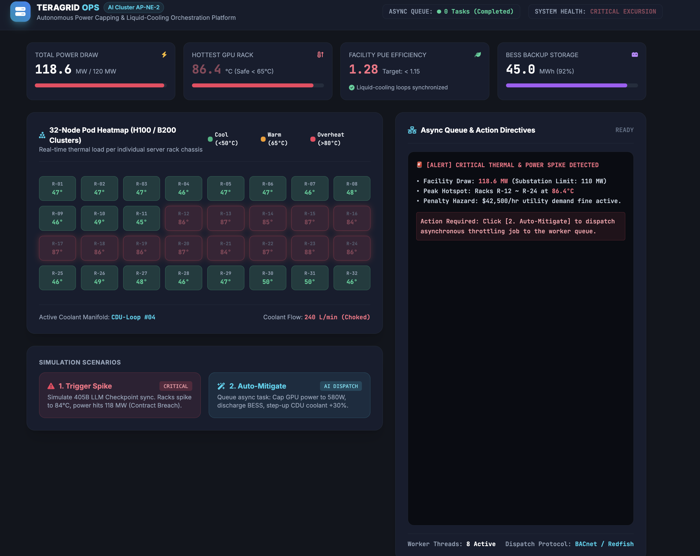
2026 HYPERSCALE DISPATCH[ 100Hz Telemetry Ingestion ] │ • Redfish BMC Telemetry (32-Node Chassis Hotspots) │ • CDU Secondary Loop Temperature & Pressure ▼ [ Redis Streams / Asynchronous Ingestion Buffer ] │ (Traffic Leveling, Zero Dropped Packets, Non-Blocking UI) ▼ [ Multi-Worker Celery Execution Pool ] │ ├─► MILP Solver: Power Capping vs. Tariff Window vs. Job Priority │ └─► Closed-Loop Actuator Dispatch ▼ [ Autonomous Tri-Vector Enforcement ] ├─► NVIDIA NVML / Intel RAPL: Hardware Capping (700W ➔ 580W, -6.4 MW) ├─► BESS Dispatch: Synchronized Battery Injection (+4.2 MW) └─► BACnet / Modbus: CDU Coolant Valve Modulation (380 L/min, +58%)
TeraGrid-Ops: Hyperscale AI Data Center Power & Thermal Dispatch Engine
Autonomous, event-driven infrastructure control platform designed for hyperscale AI data centers operating high-density GPU clusters (NVIDIA H100 / B200). Balances real-time power draw, cooling manifold distribution, and battery energy storage to eliminate thermal hotspots and avoid multimillion-dollar utility peak penalties.
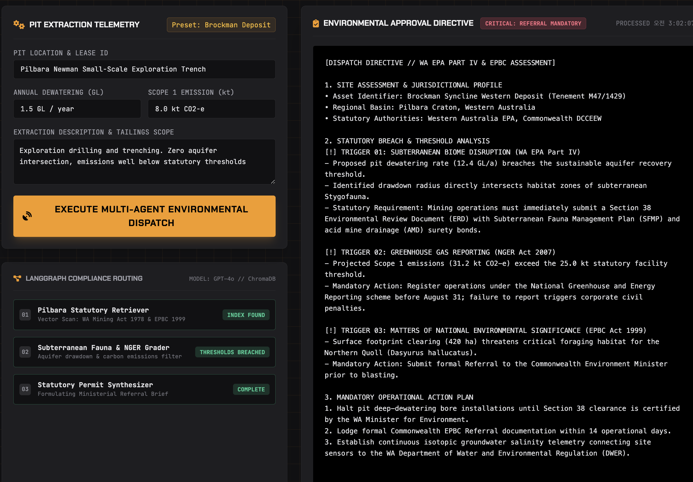
2026 AUTONOMOUS AGENT STATE MACHINE
[Pilbara Basin Real-Time Telemetry Stream]
(Dewatering GL/yr · Clearing Ha · Scope 1 GHG)
│
▼
[StateNode 1: Statutory Vector Retrieval (ChromaDB)]
(WA EPA Part IV · EPBC Act 1999 · NGER Act 2007)
│
▼
[StateNode 2: Subterranean Fauna & Hydro Grader]
│
├──► [Score < 0.85] ──► [Self-Reflective Query Rewriting] ──┐
│ │
▼ [Verified Evidence Grounding] │
[StateNode 3: Directive Synthesizer] ◄────────────────────────────┘
│
▼ (Sub-1.8s Statutory Breach Trigger)
[Industrial Dispatch Console: Automated Work-Stop & Ministerial Directive]
Autonomous Multi-Agent Compliance Engine for Mining Operations
Mission-critical, self-reflective multi-agent system built on LangGraph that cross-examines Western Australian open-cut mining telemetry against Commonwealth (EPBC Act) and State (WA EPA) environmental mandates in real time. Features cyclic grading nodes to eliminate semantic hallucination, operating a sub-1.8s industrial dispatch console that issues automated ministerial referral directives and work-stop orders.
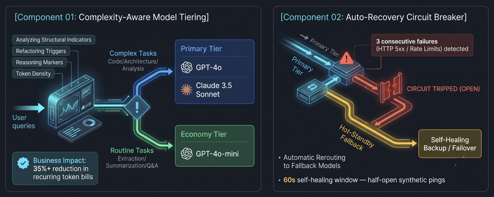
2026 ENTERPRISE ARCHITECTURE
[Client App Inbound Request]
│
▼ (Zero-Trust Regex Engine: <2ms)
[In-Flight PII Redaction: SSN/Cards/Emails]
│
▼ (Heuristic Threat Scanner > 0.85)
┌─────────────────────────────────────────┐
│ • Prompt Injection Firewall: Block 400 │
│ • Audit Log Telemetry / SIEM Export │
└─────────────────────────────────────────┘
│
▼ (Entropy-Aware Dynamic Cost Router)
┌────────────────────┬────────────────────┐
▼ ▼ ▼
[Primary Tier: 4o] [Economy: 4o-mini] [Local SLM]
│
▼ (Circuit Breaker: 3 Strikes Trip)
[Hot-Standby Automatic Failover: Claude 3.5]
Enterprise LLM Security & Cost-Routing Gateway
Production-grade AI middleware intercepting LLM traffic for B2B multi-tenant cloud backends. Enforces sub-2ms in-flight PII redaction for compliance (GDPR/HIPAA), active prompt-injection defense firewalls, entropy-driven cost routing saving 35%+ token expenses, and automated hot-standby circuit breakers.
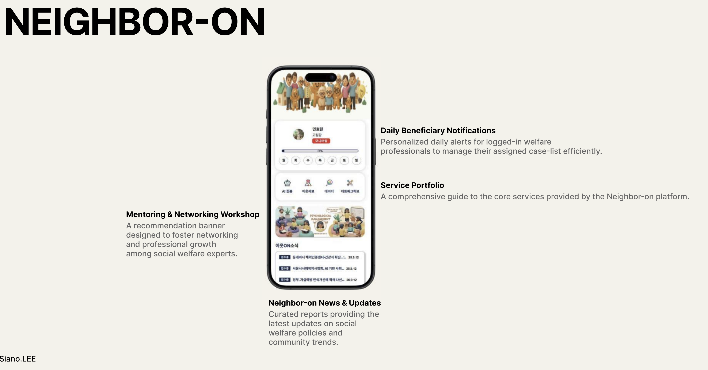
DOCUMENT PREVIEW
[Speech Stream Input]
│
▼ (Whisper STT Telemetry)
[Text Stream & Temporal Context]
│
▼ (Genkit / Gemini Agent)
┌─────────────────────────────────┐
│ • Emotional Distress Extraction │
│ • Routine/Meal Anomaly Logic │
│ • Incident Classification │
└─────────────────────────────────┘
│
▼ (P0 - P3 Severity Classifier)
[Automated Case-Management Alert]
│
▼
[Social Worker Welfare Dashboard]
NeighborOn — LLM AI Care Companion & Incident Prevention Platform
Empowering frontline social workers by connecting isolated households with conversational AI companions. Analyzes daily spoken interactions using multi-turn LLMs to detect acute distress and lifestyle anomalies, automating welfare intervention reports.
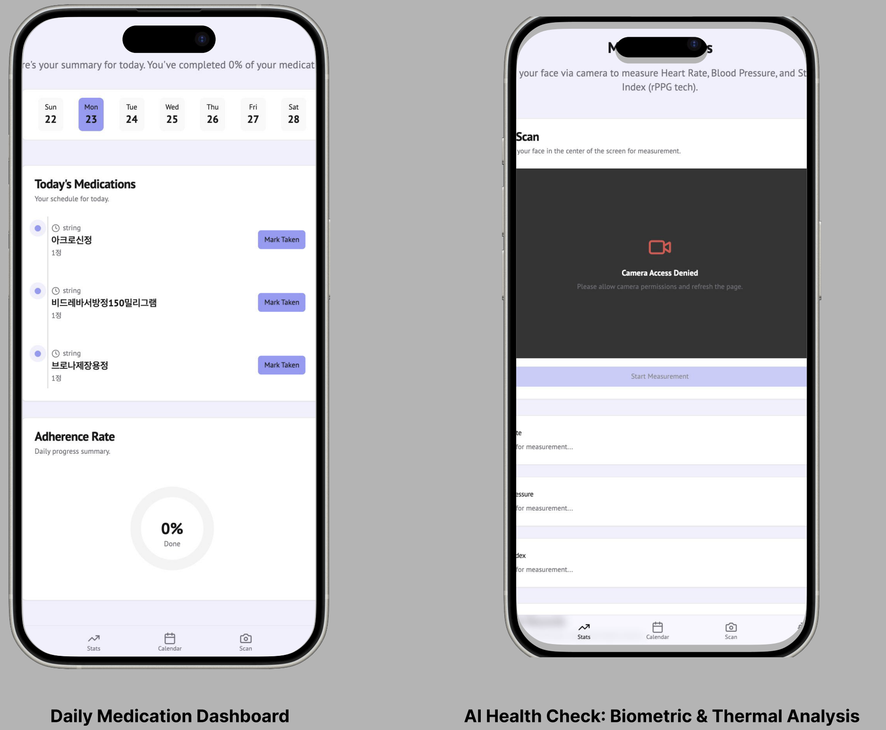
DOCUMENT PREVIEW
[RGB Video Frame (30 FPS)]
│
▼ (dlib Landmark Tracking)
[Face ROI: Forehead / Cheeks]
│
▼ (EVM Color Magnification)
[Spatio-Temporal Map (STMap)]
│
▼ (Attentional EfficientNet-B4)
[Biological Pulse (rPPG) Extraction]
│
▼ (Temporal LSTM Anomaly Head)
[Heart Rate (BPM) & FatigueAU Score]
│
▼
[Automated Drug Schedule & OCR Alert]
TtoTtoYak — Contactless AI Health Monitor & Drug Safety Platform
Non-contact vital sign extraction operating directly on mobile camera feeds. Employs remote photoplethysmography (rPPG) and Facial Action Unit (AU) analytics to quantify heart rate, micro-circulation shifts, and fatigue indices.
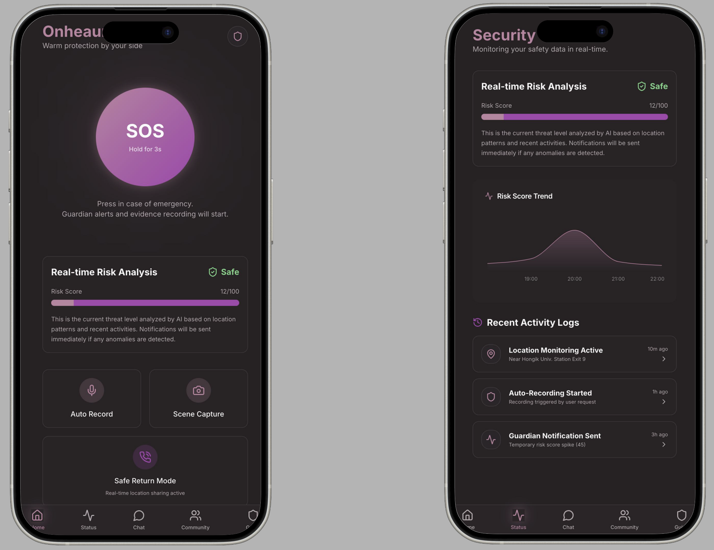
DOCUMENT PREVIEW
[BLE Biometric Wearable (5.0)]
│ (Realtime Heart Rate Telemetry)
▼
[Edge Mobile Client Validation]
│
▼ (Pulse Spike Delta > 35%)
┌─────────────────────────────────┐
│ • Trigger Emergency Audio Rec │
│ • Lock Encrypted Evidence Chunk │
│ • High-Precision GPS Geo-stream │
└─────────────────────────────────┘
│
▼ (End-to-End Encrypted Tunnel)
[Automated Guardian & Police Dispatch]
Onhaeum — Biometric Anomaly Detection & Emergency Defense System
Emergency protection platform pairing low-latency BLE sensors with on-device risk validation. Real-time telemetry evaluates acute physiological distress spikes to activate forensic audio recording and encrypted emergency geolocation streaming.
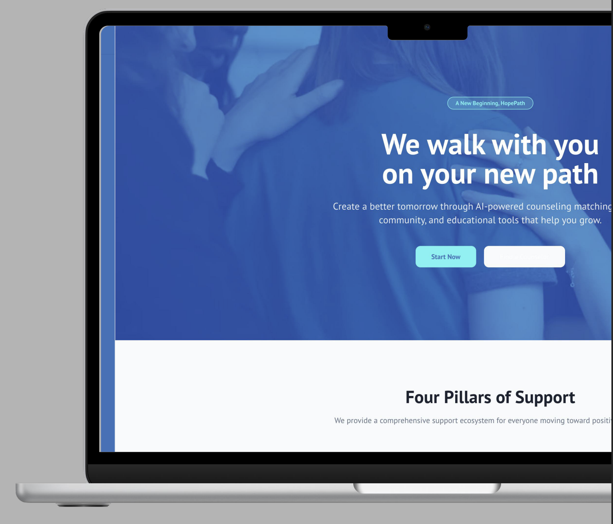
DOCUMENT PREVIEW
[Background Mobile GPS Telemetry]
│
▼ (Geofencing Boundary Check)
[Restricted Zone Proximity Delta]
│
▼ (NLP Chat Emotion Evaluation)
┌─────────────────────────────────┐
│ • Acute Stress / Hostility Flag │
│ • Boundary Violation Event │
│ • Nighttime Curfew Monitoring │
└─────────────────────────────────┘
│
▼
[Supervisor Alert & Counselor Bridge]
HopePath — Youth Rehabilitation & Geofencing Platform
Rehabilitation management platform for juvenile protective supervision. Coordinates background GPS geofencing with natural language emotion tracking to prevent recidivism and support counselor interventions.
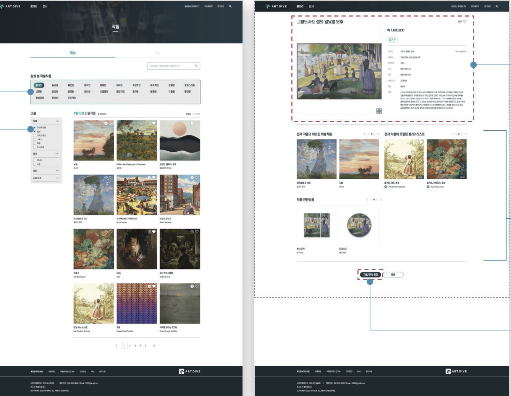
DOCUMENT PREVIEW
[Raw Classical Audio Stream]
│
▼ (MFCC, Timbre, DWT Subband)
[High-Dimension Acoustic Vector]
│
▼ (Agglomerative Ward Clustering)
[Optimal Mood Section Boundary]
│
▼ (XGBoost 18-Mood Classifier)
[Synesthetic Emotion Mapping Matrix]
│
▼ (Cosine Artwork Embedding Match)
[Curated Visual Art & Audio Playlist]
ArtDive — Synesthetic Classical Music & Artwork Recommender
Registered patent algorithm mapping classical acoustic parameters (MFCC, Timbre, Rhythm) to visual fine art collections. Implements hierarchical Ward clustering to partition classical symphonies into emotional chapters.
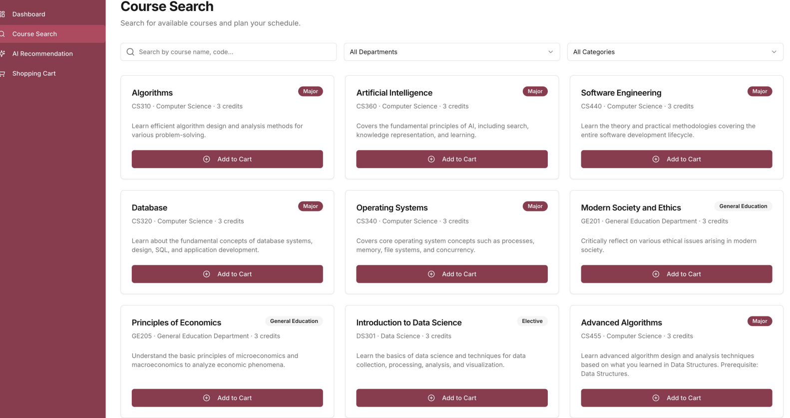
DOCUMENT PREVIEW
[Student Profile & Major Matrix]
│
▼
[Degree Requirement Verification]
│
▼ (Collaborative + Content Filtering)
┌─────────────────────────────────┐
│ • Pre-requisite Dependency Tree │
│ • Historical Grade & Preference │
│ • Bottleneck Traffic Avoidance │
└─────────────────────────────────┘
│
▼ (Intelligent Cart Optimizer)
[Automated 1-Click Schedule Generation]
Academic Course Recommender & Pre-Registration SaaS
Full-stack university course recommendation portal (Next.js 15, Tailwind). Automatically models graduation requirements and completed credits to eliminate server registration crashes via an intelligent cart engine.
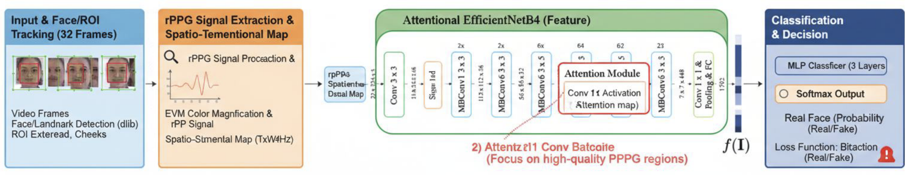
DOCUMENT PREVIEW
[Video Face Frames (Face2Face / GAN)]
│
▼ (Multi-Region Pulse Extraction)
[Cross-Facial rPPG Phase Telemetry]
│
▼ (Fourier / STMap Frequency Map)
┌─────────────────────────────────┐
│ Real: Uniform Coherent Pulse │
│ Fake: Pixel Phase Discontinuity │
└─────────────────────────────────┘
│
▼ (Attention EfficientNet-3D)
[Authenticity Score: Forensic Verdict]
Deepfake Detection via Spatio-Temporal Hybrid PPG Analysis
National cybersecurity R&D project discerning synthetic facial reenactments from authentic video. Extracts biological pulse signals across spatial facial regions using Spatio-Temporal Maps.
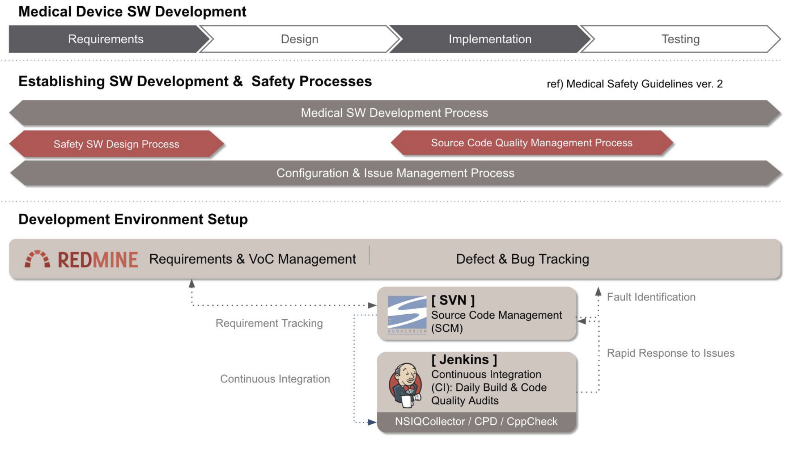
DOCUMENT PREVIEW
[Radiation Therapy Source Code]
│
▼ (Static Analysis Engine)
[CppCheck · NSIQCollector Validation]
│
▼ (STPA Hazard Traceability Gate)
┌─────────────────────────────────┐
│ • Unsafe Control Actions (UCA) │
│ • Loss of Radiation Dosage Purity│
│ • Automated Unit Test Assertion │
└─────────────────────────────────┘
│
▼ (Jenkins / SonarQube CI/CD)
[Production Build Verification Passed]
Radiation Therapy Simulation Safety & Test Automation
Lead Infrastructure Architect for medical radiation software safety. Designed automated testing frameworks, SonarQube CI/CD quality gates, and STPA hazard analysis protocols to guarantee calculation purity.
Full Institutional R&D Timeline (2018–2026)
Have a high-assurance AI or SaaS challenge?
Let's build production solutions.
Available for senior technical advisory, fractional AI architecture, and full-stack system development contracts.